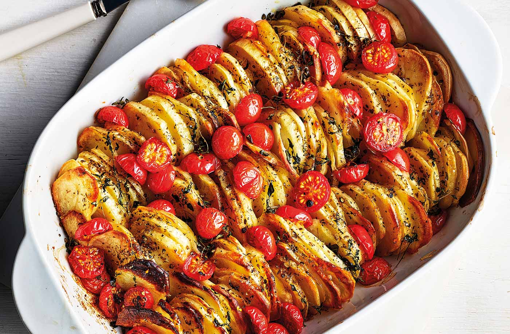

How To Do Tomato and Oregano Potato Bake Recipe

Ingredients
- 1.5kg Maris Piper potatoes, peeled and thinly sliced (2mm)
- 2 tbsp extra-virgin olive oil, plus 2 tsp
- 1 tbsp red wine vinegar
- 1 tbsp dried oregano
- 50g cherry tomatoes, halved
- 1 tbsp fresh thyme leaves